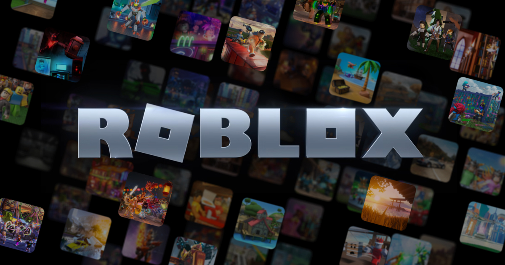

Roblox
Roblox-моя самая любимая игра
Я играю в очень могие игры там:sakura stand,tsb,cursed area,curse bg.
Roblox — игровая онлайн-платформа и система создания игр, позволяющая любому пользователю создавать свои собственные[⇨] и играть в созданные другими игры[⇨], охватывающие широкий спектр жанров[6]. В некоторых источниках Roblox называют метавселенной[7][8]. По состоянию на август 2020 года у Roblox более 164 млн активных пользователей в месяц[9]; на октябрь 2021 года более 226 млн[10]. Все они, в общей сумме, наиграли в нём более 107 млрд часов[11]. Причём в Roblox играют более половины всех детей США в возрасте до 16 лет[12][13]. Рост его популярности начался во второй половине 2010 года[14], а резко ускорился в связи с пандемией COVID-19[15]. Сайт игровой платформы занимает второе место по популярности среди подростков, сразу после сайтов Google, включая YouTube[6]. В начале 2024 года Roblox побил мировой рекорд по онлайну, набрав 9,7 млн активных пользователей[16].
Roblox Studio — это собственный движок Roblox, разрабатываемый и поддерживаемый Roblox Corporation, позволяющий каждому пользователю создавать и опубликовывать игры любых жанров в неограниченном количестве, но исключительно на самой платформе[17]. Игры кодируются в системе объектно-ориентированного программирования, использующей язык программирования Luau (диалект Lua) для управления игровой средой[18]. Пользователи могут создавать игровые продукты, представляющие собой приобретаемый контент через разовые покупки, а также микротранзакции через продукты разработчика. Разработчики на сайте обменивают Robux, заработанный на различных продуктах своих игр, на реальную валюту через систему Developer Exchange[19] и Premium Exchange. Процент доходов от покупок делится между разработчиком и Roblox[20][21]. С 1 ноября 2020 года Roblox Studio больше не поддерживается на Mac OS X 10.10[22]. Roblox позволяет игрокам покупать, продавать и создавать виртуальные предметы. Одежда может быть куплена любым игроком, но продавать её могут только пользователи, имеющие Premium подписку[23]. Только администраторы Roblox могут продавать аксессуары, снаряжение и наборы под официальной учётной записью Roblox[24]. C 2019 года делать аксессуары могут пользователи, которые были отобраны Roblox в качестве UGC-креаторов[25]. Предметы с ограниченным статусом могут продаваться только по каталогу или продаваться в Builder Club (нынешний Premium)[26]. Robux — это виртуальная валюта в Roblox, которая позволяет игрокам покупать различные предметы. Игроки могут получить Robux с помощью реальных покупок, другого игрока, покупающего его предметы, или ежемесячно зарабатывая Robux с подпиской[20][27]. До 2016 года в Roblox существовала другая валюта — Tix (сокращение от англ. Tickets), которую можно было потратить на вещи в каталоге и на рекламу. Игроки зарабатывали Tix с помощью разных методов, например, ежедневно посещая сайт. Валюта была упразднена 14 апреля 2016 года, а все остатки на балансе были конфискованы[28][29]. Игры Благодаря своему статусу игровой платформы, Roblox имеет множество игр, созданных игроками. По состоянию на май 2020 года в каждой из самых популярных игр в Roblox было более 10 миллионов активных игроков в месяц. По состоянию на ноябрь 2021 года в Roblox есть 49 приключений, набравших более 1 миллиарда посещений[30], 26 953 приключений, набравших свыше 100 тысяч посещений и 107 737 приключений, которые набрали 10 тысяч посещений[31]. Также Roblox упомянул, что на их платформе в день отправляют более 2,5 млрд сообщений и 17 миллионов игроков заводят себе друзей также ежедневно[31]. Также в марте 2021 года американское интернет-издание TechCrunch отметило, что игры Roblox в значительной степени отличаются от традиционных бесплатных видеоигр. В феврале 2022 года Roblox поделился об успехах за весь 2021 год, где говорилось о том, что игроки провели в приключениях более 41 млрд часов[32]. Успешные игры в Roblox ориентированы на немедленную вовлечённость в игру, а добавление руководств значительно снижает её у игроков, вопреки общепринятому мнению о бесплатных играх[33]. События Roblox иногда проводит реальные и виртуальные события. Одним из таких событий является Roblox Developer Conference (с англ. — «Конференция разработчиков Roblox»)[34]. Ежегодно проходит премия Bloxy Award, на которой выбирают лучших разработчиков и их игры. Также ранее проводилась виртуальная охота за яйцами (прекращено с 2021)[35] и такие мероприятия, как BloxCon[20]. 15 ноября 2020 года Roblox совместно с Lil Nas X провели глобальный концерт прямо в игре, протестировав новую функцию в движке
Видео про игру роблокс
Звук смерти в Роблокс
Офис разроботчиков роблокс